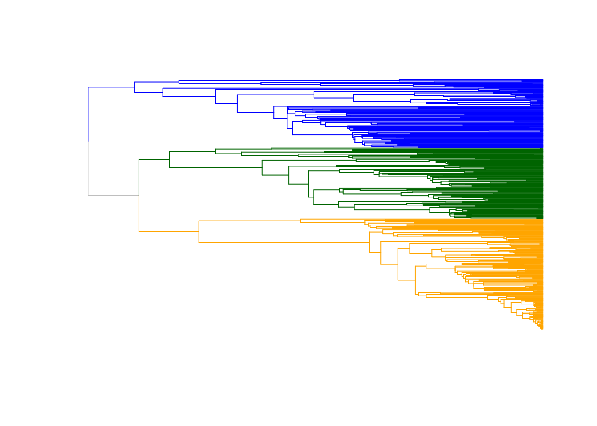
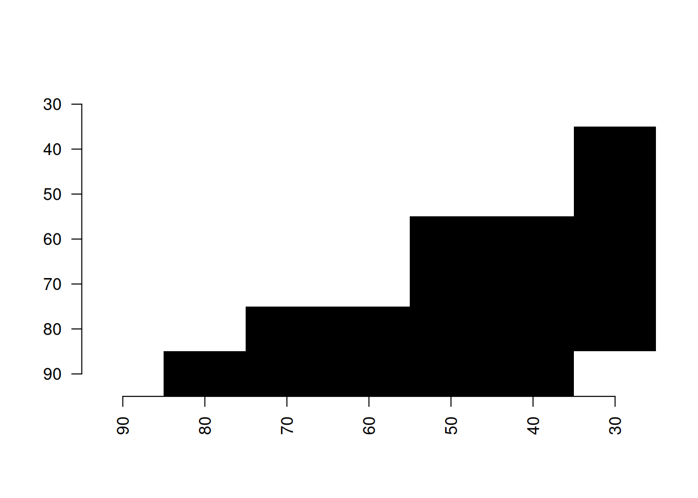

6 Other functionalities
The dispRity package also contains several other functions that are not specific to multidimensional analysis but that are often used by dispRity internal functions.
However, we decided to make these functions also available at a user level since they can be handy for certain specific operations!
You’ll find a brief description of each of them (alphabetically) here:
6.1 char.diff
This is yet another function for calculating distance matrices.
There are many functions for calculating pairwise distance matrices in R (stats::dist, vegan::vegdist, cluster::daisy or Claddis::calculate_morphological_distances) but this one is the dispRity one.
It is slightly different to the ones mentioned above (though not that dissimilar from Claddis::calculate_morphological_distances) in the fact that it focuses on comparing discrete morphological characters and tries to solve all the problems linked to these kind of matrices (especially dealing with special tokens).
The function intakes a matrix with either numeric or integer (NA included) or matrices with character that are indeed integers (e.g."0" and "1").
It then uses a bitwise operations architecture implemented in C that renders the function pretty fast and pretty modular.
This bitwise operations translates the character states into binary values.
This way, 0 becomes 1, 1 becomes 2, 2 becomes 4, 3 becomes 8, etc…
Specifically it can handle any rules specific to special tokens (i.e. symbols) for discrete morphological characters. For example, should you treat missing values "?" as NA (ignoring them) or as any possible character state (e.g. c("0", "1")?)? And how to treat characters with a ampersand ("&")? char.diff can answer to all these questions!
Let’s start by a basic binary matrix 4*3 with random integer:
## A random binary matrix
matrix_binary <- matrix(sample(c(0,1), 12, replace = TRUE), ncol = 4,
dimnames = list(letters[1:3], LETTERS[1:4]))By default, char.diff measures the hamming distance between characters:
## The hamming distance between characters
(differences <- char.diff(matrix_binary))## A B C D
## A 0 0 1 1
## B 0 0 1 1
## C 1 1 0 0
## D 1 1 0 0
## attr(,"class")
## [1] "matrix" "char.diff"Note that the results is just a pairwise distance (dissimilarity) matrix with some special dual class matrix and char.diff.
This means it can easily be plotted via the disparity package:
## Visualising the matrix
plot(differences)You can check all the numerous plotting options in the ?plot.char.diff manual (it won’t be developed here).
The char.diff function has much more options however (see all of them in the ?char.diff manual) for example to measure different differences (via method) or making the comparison work per row (for a distance matrix between the rows):
## Euclidean distance between rows
char.diff(matrix_binary, by.col = FALSE, method = "euclidean")## a b c
## a 0.000000 1.414214 1.414214
## b 1.414214 0.000000 0.000000
## c 1.414214 0.000000 0.000000
## attr(,"class")
## [1] "matrix" "char.diff"We can however make it more interesting by playing with the different rules to play with different tokens.
First let’s create a matrix with morphological characters as numeric characters:
## A random character matrix
(matrix_character <- matrix(sample(c("0","1","2"), 30, replace = TRUE), ncol = 5,
dimnames = list(letters[1:6], LETTERS[1:5])))## A B C D E
## a "1" "1" "1" "1" "0"
## b "0" "2" "0" "2" "0"
## c "2" "2" "1" "2" "0"
## d "1" "2" "0" "0" "1"
## e "2" "2" "1" "1" "2"
## f "0" "2" "0" "2" "0"## The hamming difference between columns
char.diff(matrix_character)## A B C D E
## A 0.0 0.6 0.6 0.6 0.8
## B 0.6 0.0 0.4 0.4 0.8
## C 0.6 0.4 0.0 0.4 0.6
## D 0.6 0.4 0.4 0.0 1.0
## E 0.8 0.8 0.6 1.0 0.0
## attr(,"class")
## [1] "matrix" "char.diff"Here the characters are automatically converted into bitwise integers to be compared efficiently. We can now add some more special tokens like "?" or "0/1" for uncertainties between state "0" and "1" but not "2":
## Adding uncertain characters
matrix_character[sample(1:30, 8)] <- "0/1"
## Adding missing data
matrix_character[sample(1:30, 5)] <- "?"
## This is what it looks like now
matrix_character## A B C D E
## a "?" "?" "1" "1" "0"
## b "0" "0/1" "0/1" "0/1" "0"
## c "2" "2" "?" "0/1" "0"
## d "1" "2" "0" "0/1" "1"
## e "?" "2" "1" "1" "2"
## f "0" "2" "0" "?" "0/1"## The hamming difference between columns including the special characters
char.diff(matrix_character)## A B C D E
## A 0.0000000 0.6666667 1.00 0.50 0.6666667
## B 0.6666667 0.0000000 1.00 1.00 0.7500000
## C 1.0000000 1.0000000 0.00 0.00 0.2500000
## D 0.5000000 1.0000000 0.00 0.00 0.2500000
## E 0.6666667 0.7500000 0.25 0.25 0.0000000
## attr(,"class")
## [1] "matrix" "char.diff"Note here that it detected the default behaviours for the special tokens "?" and "/": "?" are treated as NA (not compared) and "/" are treated as both states (e.g. "0/1" is treated as "0" and as "1").
We can specify both the special tokens and the special behaviours to consider via special.tokens and special.behaviours.
The special.tokens are missing = "?", inapplicable = "-", uncertainty = "\" and polymorphism = "&" meaning we don’t have to modify them for now.
However, say we want to change the behaviour for "?" and treat them as all possible characters and treat "/" as only the character "0" (as an integer) we can specify them giving a behaviour function:
## Specifying some special behaviours
my_special_behaviours <- list(missing = function(x,y) return(y),
uncertainty = function(x,y) return(as.integer(0)))
## Passing these special behaviours to the char.diff function
char.diff(matrix_character, special.behaviour = my_special_behaviours)## A B C D E
## A 0.0 0.6 0.6 0.6 0.6
## B 0.6 0.0 0.8 0.8 0.8
## C 0.6 0.8 0.0 0.4 0.6
## D 0.6 0.8 0.4 0.0 1.0
## E 0.6 0.8 0.6 1.0 0.0
## attr(,"class")
## [1] "matrix" "char.diff"The results are quiet different as before! Note that you can also specify some really specific behaviours for any type of special token.
## Adding weird tokens to the matrix
matrix_character[sample(1:30, 8)] <- "%"
## Specify the new token and the new behaviour
char.diff(matrix_character, special.tokens = c(weird_one = "%"),
special.behaviours = list(
weird_one = function(x,y) return(as.integer(42)))
)## A B C D E
## A 0 1 1 0 NaN
## B 1 0 1 1 NaN
## C 1 1 0 0 0
## D 0 1 0 0 0
## E NaN NaN 0 0 0
## attr(,"class")
## [1] "matrix" "char.diff"Of course the results can be quiet surprising then… But that’s the essence of the modularity. You can see more options in the function manual ?char.diff!
6.2 clean.data
This is a rather useful function that allows matching a matrix or a data.frame to a tree (phylo) or a distribution of trees (multiPhylo).
This function outputs the cleaned data and trees (if cleaning was needed) and a list of dropped rows and tips.
## Generating a trees with labels from a to e
dummy_tree <- rtree(5, tip.label = LETTERS[1:5])
## Generating a matrix with rows from b to f
dummy_data <- matrix(1, 5, 2, dimnames = list(LETTERS[2:6], c("var1", "var2")))
##Cleaning the trees and the data
(cleaned <- clean.data(data = dummy_data, tree = dummy_tree))## $tree
##
## Phylogenetic tree with 4 tips and 3 internal nodes.
##
## Tip labels:
## D, B, E, C
##
## Rooted; includes branch lengths.
##
## $data
## var1 var2
## B 1 1
## C 1 1
## D 1 1
## E 1 1
##
## $dropped_tips
## [1] "A"
##
## $dropped_rows
## [1] "F"6.3 crown.stem
This function quiet handily separates tips from a phylogeny between crown members (the living taxa and their descendants) and their stem members (the fossil taxa without any living relatives).
data(BeckLee_tree)
## Diving both crow and stem species
(crown.stem(BeckLee_tree, inc.nodes = FALSE))## $crown
## [1] "Dasypodidae" "Bradypus" "Myrmecophagidae" "Todralestes"
## [5] "Potamogalinae" "Dilambdogale" "Widanelfarasia" "Rhynchocyon"
## [9] "Procavia" "Moeritherium" "Pezosiren" "Trichechus"
## [13] "Tribosphenomys" "Paramys" "Rhombomylus" "Gomphos"
## [17] "Mimotona" "Cynocephalus" "Purgatorius" "Plesiadapis"
## [21] "Notharctus" "Adapis" "Patriomanis" "Protictis"
## [25] "Vulpavus" "Miacis" "Icaronycteris" "Soricidae"
## [29] "Solenodon" "Eoryctes"
##
## $stem
## [1] "Daulestes" "Bulaklestes" "Uchkudukodon"
## [4] "Kennalestes" "Asioryctes" "Ukhaatherium"
## [7] "Cimolestes" "unnamed_cimolestid" "Maelestes"
## [10] "Batodon" "Kulbeckia" "Zhangolestes"
## [13] "unnamed_zalambdalestid" "Zalambdalestes" "Barunlestes"
## [16] "Gypsonictops" "Leptictis" "Oxyclaenus"
## [19] "Protungulatum" "Oxyprimus"Note that it is possible to include or exclude nodes from the output. To see a more applied example: this function is used in chapter 03: specific tutorials.
6.4 get.bin.ages
This function is similar than the crown.stem one as it is based on a tree but this one outputs the stratigraphic bins ages that the tree is covering.
This can be useful to generate precise bin ages for the chrono.subsets function:
get.bin.ages(BeckLee_tree)## [1] 132.9000 129.4000 125.0000 113.0000 100.5000 93.9000 89.8000 86.3000
## [9] 83.6000 72.1000 66.0000 61.6000 59.2000 56.0000 47.8000 41.2000
## [17] 37.8000 33.9000 28.1000 23.0300 20.4400 15.9700 13.8200 11.6300
## [25] 7.2460 5.3330 3.6000 2.5800 1.8000 0.7810 0.1260 0.0117
## [33] 0.0000Note that this function outputs the stratigraphic age limits by default but this can be customisable by specifying the type of data (e.g. type = "Eon" for eons).
The function also intakes several optional arguments such as whether to output the startm end, range or midpoint of the stratigraphy or the year of reference of the International Commission of Stratigraphy.
To see a more applied example: this function is used in chapter 03: specific tutorials.
6.5 match.tip.edge
This function matches a vector of discreet tip values with the edges connecting these tips in the "phylo" structure.
This can be used to pull the branches of interest for some specific trait of some group of species or for colouring tree tips based on clades.
For example, with the charadriiformes dataset, you can plot the tree with the branches coloured by clade.
To work properly, the function requires the characteristics of the tip labels (e.g. the clade colour) to match the order of the tips in the tree:
## Loading the charadriiformes data
data(charadriiformes)
## Extracting the tree
my_tree <- charadriiformes$tree
## Extracting the data column that contains the clade assignments
my_data <- charadriiformes$data[, "clade"]
## Changing the levels names (the clade names) to colours
levels(my_data) <- c("orange", "blue", "darkgreen")
my_data <- as.character(my_data)
## Matching the data rownames to the tip order in the tree
my_data <- my_data[match(ladderize(my_tree)$tip.label, rownames(charadriiformes$data))]We can then match this tip data to their common descending edges.
We will also colour the edges that is not descendant directly from a common coloured tip in grey using "replace.na = "grey".
Note that these edges are usually the edges at the root of the tree that are the descendant edges from multiple clades.
## Matching the tip colours (labels) to their descending edges in the tree
## (and making the non-match edges grey)
clade_edges <- match.tip.edge(my_data, my_tree, replace.na = "grey")
## Plotting the results
plot(ladderize(my_tree), show.tip.label = FALSE, edge.color = clade_edges)
But you can also use this option to only select some specific edges and modify them (for example making them all equal to one):
## Adding a fixed edge length to the green clade
my_tree_modif <- my_tree
green_clade <- which(clade_edges == "darkgreen")
my_tree_modif$edge.length[green_clade] <- 1
plot(ladderize(my_tree_modif), show.tip.label = FALSE,
edge.color = clade_edges)
6.6 MCMCglmm utilities
Since version 1.7, the dispRity package contains several utility functions for manipulating "MCMCglmm" (that is, objects returned by the function MCMCglmm::MCMCglmm).
These objects are a modification of the mcmc object (from the package coda) and can be sometimes cumbersome to manipulate because of the huge amount of data in it.
You can use the functions MCMCglmm.traits for extracting the number of traits, MCMCglmm.levels for extracting the level names, MCMCglmm.sample for sampling posterior IDs and MCMCglmm.covars for extracting variance-covariance matrices. You can also quickly calculate the variance (or relative variance) for each terms in the model using MCMCglmm.variance (the variance is calculated as the sum of the diagonal of each variance-covariance matrix for each term).
## Loading the charadriiformes data that contains a MCMCglmm object
data(charadriiformes)
my_MCMCglmm <- charadriiformes$posteriors
## Which traits where used in this model?
MCMCglmm.traits(my_MCMCglmm)## [1] "PC1" "PC2" "PC3"## Which levels where used for the model's random terms and/or residuals?
MCMCglmm.levels(my_MCMCglmm)## random random random random
## "animal:clade_1" "animal:clade_2" "animal:clade_3" "animal"
## residual
## "units"## The level names are converted for clarity but you can get them unconverted
## (i.e. as they appear in the model)
MCMCglmm.levels(my_MCMCglmm, convert = FALSE)## random random
## "us(at.level(clade, 1):trait):animal" "us(at.level(clade, 2):trait):animal"
## random random
## "us(at.level(clade, 3):trait):animal" "us(trait):animal"
## residual
## "us(trait):units"## Sampling 2 random posteriors samples IDs
(random_samples <- MCMCglmm.sample(my_MCMCglmm, n = 2))## [1] 749 901## Extracting these two random samples
my_covars <- MCMCglmm.covars(my_MCMCglmm, sample = random_samples)
## Plotting the variance for each term in the model
boxplot(MCMCglmm.variance(my_MCMCglmm), horizontal = TRUE, las = 1,
xlab = "Relative variance",
main = "Variance explained by each term")
See more in the $covar section on what to do with these "MCMCglmm" objects.
6.7 pair.plot
This utility function allows to plot a matrix image of pairwise comparisons. This can be useful when getting pairwise comparisons and if you’d like to see at a glance which pairs of comparisons have high or low values.
## Random data
data <- matrix(data = runif(42), ncol = 2)
## Plotting the first column as a pairwise comparisons
pair.plot(data, what = 1, col = c("orange", "blue"), legend = TRUE,
diag = 1)
Here blue squares are ones that have a high value and orange ones the ones that have low values.
Note that the values plotted correspond the first column of the data as designated by what = 1.
It is also possible to add some tokens or symbols to quickly highlight to specific cells, for example which elements in the data are below a certain value:
## The same plot as before without the diagonal being
## the maximal observed value
pair.plot(data, what = 1, col = c("orange", "blue"), legend = TRUE,
diag = "max")
## Highlighting with an asterisk which squares have a value
## below 0.2
pair.plot(data, what = 1, binary = 0.2, add = "*", cex = 2)
This function can also be used as a binary display when running a series of pairwise t-tests.
For example, the following script runs a wilcoxon test between the time-slices from the disparity example dataset and displays in black which pairs of slices have a p-value below 0.05:
## Loading disparity data
data(disparity)
## Testing the pairwise difference between slices
tests <- test.dispRity(disparity, test = wilcox.test, correction = "bonferroni")
## Plotting the significance
pair.plot(as.data.frame(tests), what = "p.value", binary = 0.05)
6.8 reduce.matrix
This function allows to reduce columns or rows of a matrix to make sure that there is enough overlap for further analysis.
This is particularly useful if you are going to use distance matrices since it uses the vegan::vegdist function to test whether distances can be calculated or not.
For example, if we have a patchy matrix like so (where the black squares represent available data):
set.seed(1)
## A 10*5 matrix
na_matrix <- matrix(rnorm(50), 10, 5)
## Making sure some rows don't overlap
na_matrix[1, 1:2] <- NA
na_matrix[2, 3:5] <- NA
## Adding 50% NAs
na_matrix[sample(1:50, 25)] <- NA
## Illustrating the gappy matrix
image(t(na_matrix), col = "black")
We can use the reduce.matrix to double check whether any rows cannot be compared.
The functions needs as an input the type of distance that will be used, say a "gower" distance:
## Reducing the matrix by row
(reduction <- reduce.matrix(na_matrix, distance = "gower"))## $rows.to.remove
## [1] "9" "1"
##
## $cols.to.remove
## NULLWe can not remove the rows 1 and 9 and see if that improved the overlap:
image(t(na_matrix[-as.numeric(reduction$rows.to.remove), ]),
col = "black")
6.9 select.axes
This function allows you to select which axes (or how many of them) are relevant in your trait space analyses. Usually, when the trait space is an ordination, workers select a certain number of axes to reduce the dimensionality of the dataset by removing axes that contain relatively little information. This is often done by selecting the axes from which the cumulative individual variance is lower than an arbitrary threshold. For example, all the axes that contain together 0.95 of the variance:
## The USArrest example in R
ordination <- princomp(USArrests, cor = TRUE)
## The loading of each variable
loadings(ordination)##
## Loadings:
## Comp.1 Comp.2 Comp.3 Comp.4
## Murder 0.536 0.418 0.341 0.649
## Assault 0.583 0.188 0.268 -0.743
## UrbanPop 0.278 -0.873 0.378 0.134
## Rape 0.543 -0.167 -0.818
##
## Comp.1 Comp.2 Comp.3 Comp.4
## SS loadings 1.00 1.00 1.00 1.00
## Proportion Var 0.25 0.25 0.25 0.25
## Cumulative Var 0.25 0.50 0.75 1.00## Or the same operation but manually
variances <- apply(ordination$scores, 2, var)
scaled_variances <- variances/sum(variances)
sumed_variances <- cumsum(scaled_variances)
round(rbind(variances, scaled_variances, sumed_variances), 3)## Comp.1 Comp.2 Comp.3 Comp.4
## variances 2.531 1.010 0.364 0.177
## scaled_variances 0.620 0.247 0.089 0.043
## sumed_variances 0.620 0.868 0.957 1.000In this example, you can see that the three first axes are required to have at least 0.95 of the variance.
You can do that automatically in dispRity using the select.axes function.
## Same operation automatised
(selected <- select.axes(ordination))## The first 3 dimensions are needed to express at least 95% of the variance in the whole trait space.
## You can use x$dimensions to select them or use plot(x) and summary(x) to summarise them.This function does basically what the script above does and allows the results to be plotted or summarised into a table.
## Summarising this info
summary(selected)## Comp.1.var Comp.1.sum Comp.2.var Comp.2.sum Comp.3.var Comp.3.sum
## whole_space 0.62 0.62 0.247 0.868 0.089 0.957
## Comp.4.var Comp.4.sum
## whole_space 0.043 1## Plotting it
plot(selected)## Extracting the dimensions
## (for the dispRity function for example)
selected$dimensions## [1] 1 2 3However, it might be interesting to not only consider the variance within the whole trait space but also among groups of specific interest.
E.g. if the 95% of the variance is concentrated in the two first axes for the whole trait space, that does not automatically mean that it is the case for each subset in this space. Some subset might require more than the two first axes to express 95% of their variance!
You can thus use the select.axes function to look at the results per group as well as through the whole trait space.
Note that you can always change the threshold value (default is 0.95). Here for example we set it to 0.9 (we arbitrarily decide that explain 90% of the variance is enough).
## Creating some groups of stats
states_groups <- list("Group1" = c("Mississippi","North Carolina",
"South Carolina", "Georgia", "Alabama",
"Alaska", "Tennessee", "Louisiana"),
"Group2" = c("Florida", "New Mexico", "Michigan",
"Indiana", "Virginia", "Wyoming", "Montana",
"Maine", "Idaho", "New Hampshire", "Iowa"),
"Group3" = c("Rhode Island", "New Jersey", "Hawaii", "Massachusetts"))
## Running the same analyses but per groups
selected <- select.axes(ordination, group = states_groups, threshold = 0.9)
## Plotting the results
plot(selected)
As you can see here, the whole space requires the three first axes to explain at least 90% of the variance (in fact, 95% as seen before).
However, different groups have a different story!
The Group 1 and 3 requires 4 dimensions whereas Group 2 requires only 1 dimensions (note how for Group 3, there is actually nearly no variance explained on the second axes)!
Using this method, you can safely use the four axes returned by the function (selected$dimensions) so that every group has at least 90% of their variance explained in the trait space.
If you’ve used the function if you’ve already done some grouping in your disparity analyses (e.g. using the function custom.subsets or chrono.subsets), you can use the generated dispRity to automatise this analyses:
## Loading the dispRity package demo data
data(demo_data)
## A dispRity object with two groups
demo_data$hopkins## ---- dispRity object ----
## 2 customised subsets for 46 elements in one matrix:
## adult, juvenile.## Selecting axes on a dispRity object
selected <- select.axes(demo_data$hopkins)
plot(selected)
## Displaying which axes are necessary for which group
selected$dim.list## $adult
## [1] 1 2 3 4 5 6 7 8 9 10 11 12 13 14 15 16 17 18 19 20 21 22
##
## $juvenile
## [1] 1 2 3 4 5 6 7 8 9 10 11 12 13 14 15 16 17 18 19 20 21 22 23
##
## $whole_space
## [1] 1 2 3 4 5 6 7 8 9 10 11 12 13 14 15 16## Note how the whole space needs only 16 axes
## but both groups need 22 and 23 axes6.10 slice.tree
This function is a modification of the paleotree::timeSliceTree function that allows to make slices through a phylogenetic tree.
Compared to the paleotree::timeSliceTree, this function allows a model to decide which tip or node to use when slicing through a branch (whereas paleotree::timeSliceTree always choose the first available tip alphabetically).
The models for choosing which tip or node are the same as the ones used in the chrono.subsets and are described in chapter 03: specific tutorials.
The function works by using at least a tree, a slice age and a model:
set.seed(1)
## Generate a random ultrametric tree
tree <- rcoal(20)
## Add some node labels
tree$node.label <- letters[1:19]
## Add its root time
tree$root.time <- max(tree.age(tree)$ages)
## Slicing the tree at age 0.75
tree_75 <- slice.tree(tree, age = 0.75, "acctran")
## Showing both trees
par(mfrow = c(1,2))
plot(tree, main = "original tree")
axisPhylo() ; nodelabels(tree$node.label, cex = 0.8)
abline(v = (max(tree.age(tree)$ages) - 0.75), col = "red")
plot(tree_75, main = "sliced tree")
6.11 slide.nodes and remove.zero.brlen
This function allows to slide nodes along a tree! In other words it allows to change the branch length leading to a node without modifying the overall tree shape. This can be useful to add some value to 0 branch lengths for example.
The function works by taking a node (or a list of nodes), a tree and a sliding value. The node will be moved “up” (towards the tips) for the given sliding value. You can move the node “down” (towards the roots) using a negative value.
set.seed(42)
## Generating simple coalescent tree
tree <- rcoal(5)
## Sliding node 8 up and down
tree_slide_up <- slide.nodes(8, tree, slide = 0.075)
tree_slide_down <- slide.nodes(8, tree, slide = -0.075)
## Display the results
par(mfrow = c(3,1))
plot(tree, main = "original tree") ; axisPhylo() ; nodelabels()
plot(tree_slide_up, main = "slide up!") ; axisPhylo() ; nodelabels()
plot(tree_slide_down, main = "slide down!") ; axisPhylo() ; nodelabels()
The remove.zero.brlen is a “clever” wrapping function that uses the slide.nodes function to stochastically remove zero branch lengths across a whole tree.
This function will slide nodes up or down in successive postorder traversals (i.e. going down the tree clade by clade) in order to minimise the number of nodes to slide while making sure there are no silly negative branch lengths produced!
By default it is trying to slide the nodes using 1% of the minimum branch length to avoid changing the topology too much.
set.seed(42)
## Generating a tree
tree <- rtree(20)
## Adding some zero branch lengths (5)
tree$edge.length[sample(1:Nedge(tree), 5)] <- 0
## And now removing these zero branch lengths!
tree_no_zero <- remove.zero.brlen(tree)
## Exaggerating the removal (to make it visible)
tree_exaggerated <- remove.zero.brlen(tree, slide = 1)
## Check the differences
any(tree$edge.length == 0)## [1] TRUEany(tree_no_zero$edge.length == 0)## [1] FALSEany(tree_exaggerated$edge.length == 0)## [1] FALSE## Display the results
par(mfrow = c(3,1))
plot(tree, main = "with zero edges")
plot(tree_no_zero, main = "without zero edges!")
plot(tree_exaggerated, main = "with longer edges")
6.12 tree.age
This function allows to quickly calculate the ages of each tips and nodes present in a tree.
set.seed(1)
tree <- rtree(10)
## The tree age from a 10 tip tree
tree.age(tree)## ages elements
## 1 0.707 t7
## 2 0.142 t2
## 3 0.000 t3
## 4 1.467 t8
## 5 1.366 t1
## 6 1.895 t5
## 7 1.536 t6
## 8 1.456 t9
## 9 0.815 t10
## 10 2.343 t4
## 11 3.011 11
## 12 2.631 12
## 13 1.854 13
## 14 0.919 14
## 15 0.267 15
## 16 2.618 16
## 17 2.235 17
## 18 2.136 18
## 19 1.642 19It also allows to set the age of the root of the tree:
## The ages starting from -100 units
tree.age(tree, age = 100)## ages elements
## 1 23.472 t7
## 2 4.705 t2
## 3 0.000 t3
## 4 48.736 t8
## 5 45.352 t1
## 6 62.931 t5
## 7 51.012 t6
## 8 48.349 t9
## 9 27.055 t10
## 10 77.800 t4
## 11 100.000 11
## 12 87.379 12
## 13 61.559 13
## 14 30.517 14
## 15 8.875 15
## 16 86.934 16
## 17 74.235 17
## 18 70.924 18
## 19 54.533 19Usually tree age is calculated from the present to the past (e.g. in million years ago) but it is possible to reverse it using the order = present option:
## The ages in terms of tip/node height
tree.age(tree, order = "present")## ages elements
## 1 2.304 t7
## 2 2.869 t2
## 3 3.011 t3
## 4 1.544 t8
## 5 1.646 t1
## 6 1.116 t5
## 7 1.475 t6
## 8 1.555 t9
## 9 2.196 t10
## 10 0.668 t4
## 11 0.000 11
## 12 0.380 12
## 13 1.157 13
## 14 2.092 14
## 15 2.744 15
## 16 0.393 16
## 17 0.776 17
## 18 0.876 18
## 19 1.369 196.13 multi.ace
This function allows to run the ape::ace function (ancestral characters estimations) on multiple trees.
In it’s most basic structure (e.g. using all default arguments) this function is using a mix of ape::ace and castor::asr_mk_model depending on the data and the situation and is generally faster than both functions when applied to a list of trees.
However, this function provides also some more complex and modular functionalities, especially appropriate when using discrete morphological character data.
6.13.1 Using different character tokens in different situations
This data can be often coded in non-standard way with different character tokens having different meanings.
For example, in some datasets the token - can mean “the trait is inapplicable” but this can be also coded by the more conventional NA or can mean “this trait is missing” (often coded ?).
This makes the meaning of specific tokens idiosyncratic to different matrices.
For example we can have the following discrete morphological matrix with all the data encoded:
set.seed(42)
## A random tree with 10 tips
tree <- rcoal(10)
## Setting up the parameters
my_rates = c(rgamma, rate = 10, shape = 5)
## Generating a bunch of trees
multiple_trees <- rmtree(5, 10)
## A random Mk matrix (10*50)
matrix_simple <- sim.morpho(tree, characters = 50, model = "ER", rates = my_rates,
invariant = FALSE)
matrix_simple[1:10, 1:10]## [,1] [,2] [,3] [,4] [,5] [,6] [,7] [,8] [,9] [,10]
## t8 "1" "1" "1" "1" "0" "0" "0" "0" "0" "1"
## t3 "1" "1" "1" "1" "0" "0" "0" "0" "0" "1"
## t2 "1" "1" "1" "1" "0" "1" "1" "1" "0" "1"
## t1 "1" "1" "1" "1" "0" "0" "1" "1" "0" "1"
## t10 "1" "1" "1" "1" "0" "0" "1" "0" "1" "1"
## t9 "1" "1" "1" "1" "0" "0" "1" "0" "0" "1"
## t5 "0" "0" "0" "0" "1" "1" "1" "0" "0" "0"
## t6 "0" "0" "0" "0" "1" "1" "1" "0" "0" "0"
## t4 "0" "0" "0" "0" "1" "0" "0" "0" "1" "0"
## t7 "0" "0" "0" "0" "1" "0" "0" "0" "1" "0"But of course, as mentioned above, in practice, such matrices have more nuance and can including missing characters, ambiguous characters, multi-state characters, inapplicable characters, etc… All these coded and defined by different authors using different tokens (or symbols). Let’s give it a go and transform this simple data to something more messy:
## Modify the matrix to contain missing and special data
matrix_complex <- matrix_simple
## Adding 50 random "-" tokens
matrix_complex[sample(1:length(matrix_complex), 50)] <- "-"
## Adding 50 random "?" tokens
matrix_complex[sample(1:length(matrix_complex), 50)] <- "?"
## Adding 50 random "0%2" tokens
matrix_complex[sample(1:length(matrix_complex), 50)] <- "0%2"
matrix_complex[1:10,1:10]## [,1] [,2] [,3] [,4] [,5] [,6] [,7] [,8] [,9] [,10]
## t8 "1" "1" "1" "1" "?" "0" "0" "0" "0" "0%2"
## t3 "1" "-" "1" "1" "?" "0" "0" "0" "0" "1"
## t2 "1" "1" "1" "0%2" "0" "0%2" "1" "1" "0" "1"
## t1 "1" "1" "1" "1" "0" "0" "1" "?" "0" "1"
## t10 "1" "0%2" "1" "1" "-" "?" "0%2" "0%2" "1" "1"
## t9 "1" "1" "?" "1" "0%2" "0" "1" "0" "0" "1"
## t5 "0" "-" "?" "0" "1" "1" "1" "0" "0" "-"
## t6 "0" "-" "0" "0" "1" "1" "-" "-" "?" "0"
## t4 "?" "0" "0" "0" "1" "0" "0" "0" "1" "0"
## t7 "0" "0" "0" "0%2" "1" "0" "0" "-" "1" "-"In multi.ace you can specify what all these tokens actually mean and how the code should interpret them.
For example, - often means inapplicable data (i.e. the specimen does not have the coded feature, for example, the colour of the tail of a tailless bird); or ? that often means missing data (i.e. it is unknown if the specimen has a tail or not since only the head was available).
And more than the differences in meaning between these characters, different people treat these characters differently even if they have the same meaning for the token.
For example, one might want to treat - as meaning “we don’t know” (which will be treated by the algorithm as “any possible trait value”) or “we know, and it’s no possible” (which will be treated by the algorithm as NA).
Because of this situation, multi.ace allows combining any special case marked with a special token to a special behaviour.
For example we might want to create a special case called "missing" (i.e. the data is missing) that we want to denote using the token "?" and we can specify the algorithm to treat this "missing" cases ("?") as treating the character token value as “any possible values”.
This behaviour can be hard coded by providing a function with the name of the behaviour.
For example:
## The specific token for the missing cases (note the "\\" for protecting the value)
special.tokens <- c("missing" = "\\?")
## The behaviour for the missing cases (?)
special.behaviour <- list(missing <- function(x, y) return(y))
## Where x is the input value (here "?") and y is all the possible normal values for the characterThis example shows a very common case (and is actually used by default, more on that below) but this architecture allows for very modular combination of tokens and behaviours.
For example, in our code above we introduced the token "%" which is very odd (to my knowledge) and might mean something very specific in our case.
Say we want to call this case "weirdtoken" and mean that whenever this token is encountered in a character, it should be interpreted by the algorithm as the values 1 and 2, no matter what:
## Set a list of extra special tokens
my_spec_tokens <- c("weirdtoken" = "\\%")
## Weird tokens are considered as state 0 and 3
my_spec_behaviours <- list()
my_spec_behaviours$weirdtoken <- function(x,y) return(c(1,2))If you don’t need/don’t have any of this specific tokens, don’t worry, most special but common tokens are handled by default as such:
## The token for missing values:
default_tokens <- c("missing" = "\\?",
## The token for inapplicable values:
"inapplicable" = "\\-",
## The token for polymorphisms:
"polymorphism" = "\\&",
## The token for uncertainties:
"uncertanity" = "\\/")With the following associated default behaviours
## Treating missing data as all data values
default_behaviour <- list(missing <- function(x,y) y,
## Treating inapplicable data as all data values (like missing)
inapplicable <- function(x, y) y,
## Treating polymorphisms as all values present:
polymorphism <- function(x,y) strsplit(x, split = "\\&")[[1]],
## Treating uncertainties as all values present (like polymorphisms):
uncertanity <- function(x,y) strsplit(x, split = "\\&")[[1]])We can then use these token description along with our complex matrix and our list of trees to run the ancestral states estimations as follows:
## Running ancestral states
ancestral_states <- multi.ace(matrix_complex, multiple_trees,
special.tokens = my_spec_tokens,
special.behaviours = my_spec_behaviours,
verbose = TRUE)## Preparing the data:...## Warning: The characters 39 are invariant (using the current special behaviours
## for special characters) and are simply duplicated for each node.## ..Done.
## Running ancestral states estimations:
## .................................................## Warning in mapply(replace.NA, ancestral_states, characters_states, MoreArgs =
## list(special.tokens = special.tokens), : longer argument not a multiple of
## length of shorter## Done.
## Running ancestral states estimations:
## .................................................## Warning in mapply(replace.NA, ancestral_states, characters_states, MoreArgs =
## list(special.tokens = special.tokens), : longer argument not a multiple of
## length of shorter## Done.
## Running ancestral states estimations:
## .................................................## Warning in mapply(replace.NA, ancestral_states, characters_states, MoreArgs =
## list(special.tokens = special.tokens), : longer argument not a multiple of
## length of shorter## Done.
## Running ancestral states estimations:
## .................................................## Warning in mapply(replace.NA, ancestral_states, characters_states, MoreArgs =
## list(special.tokens = special.tokens), : longer argument not a multiple of
## length of shorter## Done.
## Running ancestral states estimations:
## .................................................## Warning in mapply(replace.NA, ancestral_states, characters_states, MoreArgs =
## list(special.tokens = special.tokens), : longer argument not a multiple of
## length of shorter## Done.## This outputs a list of ancestral parts of the matrices for each tree
## For example, here's the first one:
ancestral_states[[1]][1:9, 1:10]## [,1] [,2] [,3] [,4] [,5] [,6] [,7] [,8] [,9] [,10]
## [1,] "1" "1" "1" "1" "1" "0/1/2" "1" "0" "0" "1"
## [2,] "1" "1" "1" "1" "0/1" "0/1/2" "0/1" "0" "0" "1"
## [3,] "1" "1" "1" "1" "0/1" "0/1/2" "0" "0" "0" "1"
## [4,] "1" "1" "1" "1" "0" "0/1/2" "1" "1" "0" "1"
## [5,] "1" "1" "1" "1" "1" "0/1/2" "1" "0" "0" "1"
## [6,] "1" "1" "1" "1" "1" "0/1/2" "1" "0" "0" "1"
## [7,] "0" "0/1" "0/1" "0" "1" "1" "1" "0" "0" "0/1"
## [8,] "0" "0" "0" "0" "1" "0/1/2" "0" "0" "1" "0"
## [9,] "0" "0" "0" "0" "1" "1" "0" "0" "1" "0"Note that there are many different options that are not covered here.
For example, you can use different models for each character via the models argument, you can specify how to handle uncertainties via the threshold argument, use a branch length modifier (brlen.multiplier), specify the type of output, etc…
6.13.2 Feeding the results to char.diff to get distance matrices
Finally, after running your ancestral states estimations, it is not uncommon to then use these resulting data to calculate the distances between taxa and then ordinate the results to measure disparity.
You can do that using the char.diff function described above but instead of measuring the distances between characters (columns) you can measure the distances between species (rows).
You might notice that this function uses the same modular token and behaviour descriptions.
That makes sense because they’re using the same core C functions implemented in dispRity that greatly speed up distance calculations.
## Running ancestral states
## and outputing a list of combined matrices (tips and nodes)
ancestral_states <- multi.ace(matrix_complex, multiple_trees,
special.tokens = my_spec_tokens,
special.behaviours = my_spec_behaviours,
output = "combined.matrix",
verbose = TRUE)## Preparing the data:...## Warning: The characters 39 are invariant (using the current special behaviours
## for special characters) and are simply duplicated for each node.## ..Done.
## Running ancestral states estimations:
## .................................................## Warning in mapply(replace.NA, ancestral_states, characters_states, MoreArgs =
## list(special.tokens = special.tokens), : longer argument not a multiple of
## length of shorter## Done.
## Running ancestral states estimations:
## .................................................## Warning in mapply(replace.NA, ancestral_states, characters_states, MoreArgs =
## list(special.tokens = special.tokens), : longer argument not a multiple of
## length of shorter## Done.
## Running ancestral states estimations:
## .................................................## Warning in mapply(replace.NA, ancestral_states, characters_states, MoreArgs =
## list(special.tokens = special.tokens), : longer argument not a multiple of
## length of shorter## Done.
## Running ancestral states estimations:
## .................................................## Warning in mapply(replace.NA, ancestral_states, characters_states, MoreArgs =
## list(special.tokens = special.tokens), : longer argument not a multiple of
## length of shorter## Done.
## Running ancestral states estimations:
## .................................................## Warning in mapply(replace.NA, ancestral_states, characters_states, MoreArgs =
## list(special.tokens = special.tokens), : longer argument not a multiple of
## length of shorter## Done.We can then feed these matrices directly to char.diff, say for calculating the “MORD” distance:
## Measuring the distances between rows using the MORD distance
distances <- lapply(ancestral_states, char.diff, method = "mord", by.col = FALSE)And we now have a list of distances matrices with ancestral states estimated!